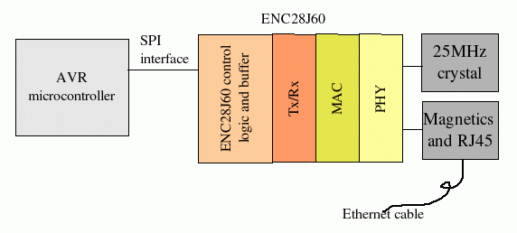
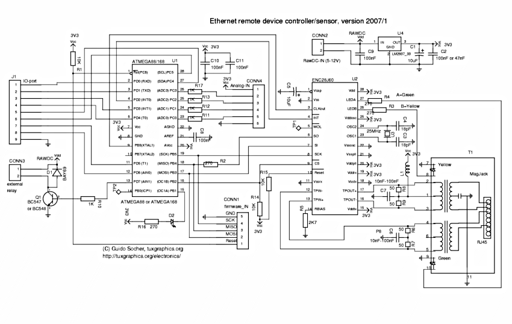

| 日期: | 2009-04-11 |
|---|---|
| 译者: | gashero |
以太网一般被认为是相当复杂的接口。所有的以太网芯片都有超过100个引脚，并且很难找到易于拥有很小内存的微控制器使用的。Microchip通过ENC28J60以太网芯片改变了这个格局。
ENC28J60是一个拥有28个引脚和SPI接口的芯片，可以适用于任何微控制器。
使用以太网，你就无需更加复杂的总线了，而且距离也不再是限制。你也可以通过它来连接WIFI桥接设备。
所有硬件都可以在 http://shop.tuxgraphics.org 中购买到。软件和电路图都是开源的(GPL v2)。
ENC28J60拥有Tx/Rx、MAC和PHY在同一芯片中。而且只需要很少一点扩展部分。最简单的形式只需要一个晶振和一个以太网变压器。所有这些都在一个DIP-28封装中。
电路块图：
第一篇文章讲解控制数字输出，几个继电器。主要是讲解电路图和软件。使用UDP程序来发送命令到微控制器。这些命令会让微控制器开启或关闭继电器。
虽然也可以实现TCP。但前的UDP软件只需要少于3KB和ATmega88一半的内存。TCP允许通过WEB浏览器控制设备，不过还没试过。
这是电路图，大部分都是直接连接的，符合ENC28J60的标准。LED-B用于显示对芯片的操作。标准的半双工通信适合大多数情况，而且也只做出了一点牺牲。
继电器连接到CONN3，注意二极管D1，它并不是没用的，也没有接错。它用于接6V继电器，并且保护电路不会被继电器的感应电压所损坏。如果你使用的继电器线圈很多，也要在继电器并联一个电阻(1k或2.2k)，以防止二极管尚未响应时孙建的感应电压损坏电路。
连接器"IO-ports"和"Analog-IN"尚未使用，用于以后的功能扩展。本例只使用了CONN3。
以太网需要很大的电流，因为可能随着导线传播很远。所以上面的电路在3.3V需要200mA的电流。而LM2937-33需要散热器才能讲5V电压转换过来。一小片铝也就够了。
ENC28J60需要一个变压器来接10base-T以太网。有些很好的RJ45连接器叫做"Magjack"已经包含了变压器和工作指示灯了。你只需要再附加一个过滤器线圈(电路图中的L1)。一个5mm的磁环，绕5-7圈就行了。
在2007年第一季度作者对硬件做过更新，如下：
电子设备第一次开发时往往很困难，因为一点点问题可能导致无法工作。你的方便在于可以基于我已有的工作来开发。
步骤一：安装LM2937-33，确保输出电压是3.3V
步骤二：焊接ENC28J60、网口等零件到电路板，但是不要焊ATmega88。连接电源并检查电压。连接网线，这时绿色的灯应该一直亮着。而集线器/交换机上的连接指示灯也会亮着。以太网会有定期的连接检查，绿色指示灯会显示。
步骤三：焊接ATmega88到电路板，再次连接电源。
步骤四：编程。下载 eth_rem_dev-1.X 软件，解压后运行 make test0.hex 。然后将 test0.hex 下载到微控制器。注意ATmega88至少需要avr-glibc-1.4.X。这会让LED (D2)按照1Hz的频率闪。这时就可以测试了。test1是ping测试，test2是echo。
步骤五：编辑文件 main.c 修改两行，配置MAC地址和IP:
static uint8_t mymac[6]={0x54,0x55,0x58,0x10,0x00,0x24};
static uint8_t myip[4]={10,0,0,24};
可用的子网掩码:
子网掩码 网络地址 255.0.0.0 10.0.0.0-10.255.255.255 255.255.0.0 172.16.0.0-172.31.255.255 255.255.255.0 192.168.0.0-192.168.255.255
@waiting...